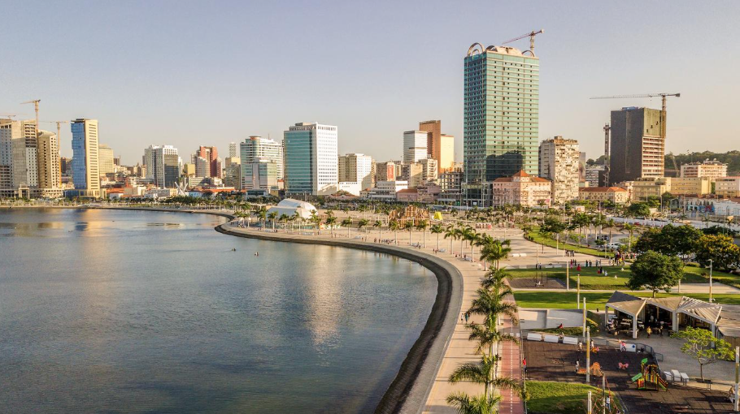
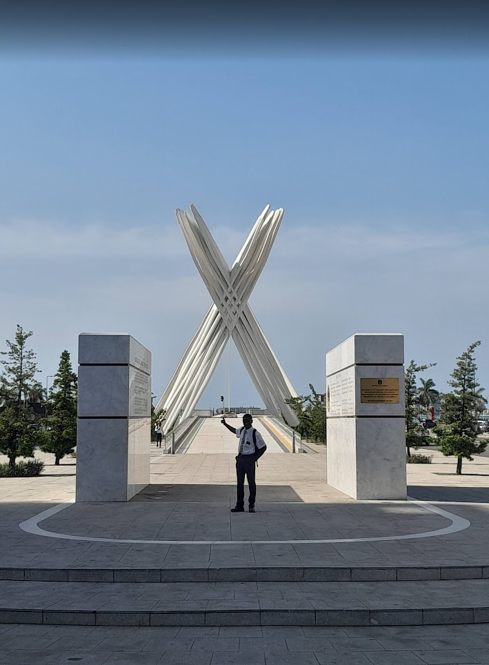

Welcome to WDD 130 - Angola: Land of Beautiful Cities and Kind People
My name is Alcidio Massanganhe, a student from Mozambique. I grew up in a small town where I learned the value of discipline and hard work.
Luanda is busy with many cars and tall buildings by the ocean. Huambo is calmer, with clean streets and beautiful weather in the mountains. Both cities showed me different sides of Angola.
What I love most about Angola is the beauty and the kindness of the people. The cities are clean and the buildings are impressive. The food is rich and full of flavor. Even when some areas feel dangerous, the people treat you with respect. My mission in Luanda and Huambo changed my life. It taught me how to talk to people and how to serve others.

Here is when I was serving my mission there. Living in Luanda and Huambo changed my life.
